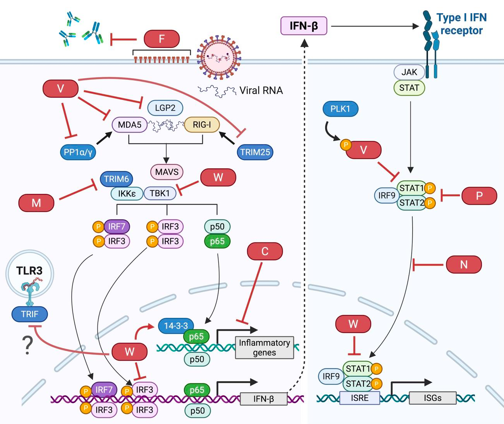

선천면역 반응 및 항바이러스 신호전달 기전 연구

바이러스 감염 시 숙주는 RIG-I, MDA5, LGP2, TLR 과 같은 다양한 항바이러스 센서를 통해 병원체를 신속하게 인지합니다. 이 과정에서 유도되는 인터페론(IFN-α/β, IFN-γ) 및 다양한 염증성 사이토카인은 항바이러스 상태를 형성하는 핵심 인자입니다.
본 연구실은 이러한 항바이러스 선천면역 센서 신호전달 경로의 활성화 과정과 조절 인자를 규명하고, 바이러스 감염에 따른 사이토카인 생성·신호전달의 세부 메커니즘을 밝히고 있습니다.
또한, 선천면역 경로를 인위적으로 활성화하거나 억제하여 면역 반응을 조절할 수 있는 면역 증강 후보물질을 고속 스크리닝 플랫폼을 통해 탐색하고, 후보물질의 작용 기전과 항바이러스 효능을 체계적으로 검증하고 있습니다.